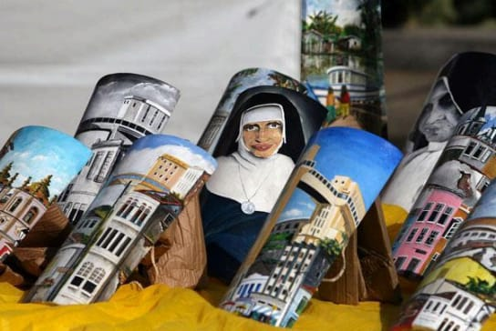

Introdução
Narração
1xO artesanato baiano é uma das expressões mais significativas da cultura popular do estado. Reúne saberes ancestrais, técnicas tradicionais e inovações criativas transmitidas entre gerações. Está presente do litoral aos sertões, refletindo os modos de vida, religiosidades e relações com a natureza.
Este site apresenta um panorama do artesanato baiano: origem histórica, diversidade, grandes mestres, importância do selo de origem e desafios contemporâneos.
1. Origem e Trajetória Histórica
Antes da colonização, povos indígenas já produziam utensílios e objetos rituais. Com a chegada dos portugueses no século XVI e dos africanos escravizados, houve uma fusão de técnicas, estilos e símbolos que deram origem ao artesanato baiano como o conhecemos hoje.
Ao longo dos séculos, o artesanato passou de funcional para simbólico e religioso. Com o turismo e a valorização da cultura local no século XX, ele se tornou também um bem comercial e patrimônio imaterial.
2. Selo "Artesanato da Bahia"
O selo foi criado em 2020 pela Secretaria do Trabalho (SETRE) e pela Fábrica Cultural. Tem três categorias — Quartzo, Esmeralda e Diamante — e reconhece autenticidade, qualidade técnica e identidade cultural dos produtos artesanais da Bahia.
Mais do que certificação, ele é uma ferramenta de valorização e mercado, elevando o reconhecimento e a visibilidade dos artesãos.
3. Diversidade do Artesanato Baiano

Cerâmica
Maragogipinho tem uma das maiores produções da América Latina. As peças têm ligação com a vida rural e a religiosidade.

Rendas e Bordados
Renda de bilro, bordado Richelieu e ponto cruz são passados de geração em geração em Saubara, Dias d’Ávila e Rio de Contas.

Cestaria
Feitas com piaçava, licuri e ouricuri, são tradição em comunidades ribeirinhas e quilombolas.

Escultura em Madeira
Carrancas do São Francisco e talhas sacras de Lençóis e Cachoeira representam o sagrado e o simbólico.
Tecelagem
Tapetes, redes e mantas feitos em algodão e juta no interior baiano, como em Remanso e Jacobina.
4. Grandes Mestres do Artesanato Baiano
O reconhecimento dos mestres artesãos é essencial para a preservação das tradições e transmissão de saberes. Eles representam técnicas, histórias e identidades locais.
- Mestre Zeca (Maragogipinho): Especialista em cerâmica utilitária e religiosa.
- Mestra Zulmira Borges (Saubara): Ícone do bordado Richelieu e símbolo da herança feminina.
- Mestre Nego Bispo (Vale do São Francisco): Cria carrancas com identidade própria.
- Mestra Deni Pataxó (Corumbau): Produz adornos e utensílios com referências indígenas Pataxó.
- Mestra Dona Cadu (Lençóis): Bonecas de pano afro-brasileiras com forte identidade cultural.
- Mestra Nadir Oliveira (Salvador): Mescla tradição têxtil e inovação em roupas e objetos decorativos.
- Mestre Tico (Jacobina): Talha sacra em madeira com detalhamento minucioso.
- Mestre Toinho do Couro (Senhor do Bonfim): Cria peças em couro reaproveitado com apelo sustentável.
5. O Artesanato Baiano Hoje
O setor vive um momento de valorização e reinvenção. Associações, feiras e políticas públicas ajudam na profissionalização e visibilidade.
Redes sociais e plataformas online possibilitam a venda direta, mas ainda existem desafios como acesso a crédito, capacitação e reconhecimento dos artesãos como trabalhadores culturais.
Mesmo assim, o artesanato baiano resiste como símbolo de memória, ancestralidade, identidade e renda — mantendo viva a força do "feito à mão".